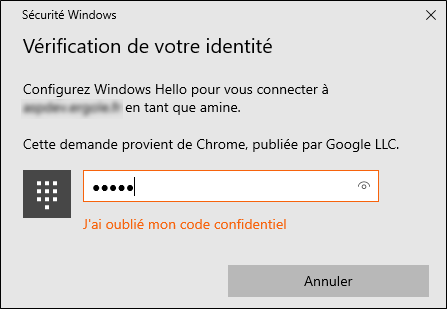
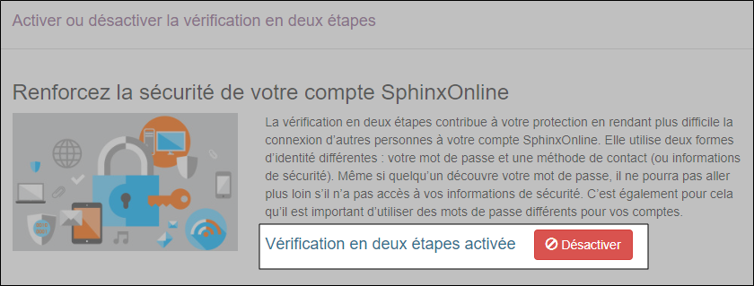
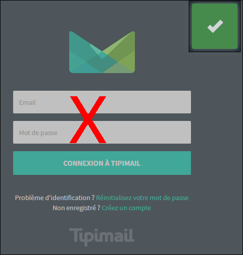

Gérer mon compte
Vous pouvez consulter et modifier toutes les informations relatives à votre compte (Nom, prénom, nom de la société, numéro de TVA, adresse, numéro de téléphone et langue etc...) depuis l'interface de gestion de compte. Pour y accéder :
-
Cliquez sur l’icône située en haut à droite de la page.
-
Puis cliquez sur Profil.

 CHANGER L'ADRESSE E-MAIL DU COMPTE
CHANGER L'ADRESSE E-MAIL DU COMPTE
Pour pouvoir modifier votre adresse e-mail, procédez comme suit :
-
Cliquez sur l'onglet Adresse e-mail.
-
Renseignez la nouvelle adresse dans le champ Email.
-
Confirmez votre identité en saisissant le mot de passe de votre compte.
-
Cliquez sur Mettre à jour l'adresse e-mail pour valider le changement.
 MODIFIER LE MOT DE PASSE
MODIFIER LE MOT DE PASSE
Pour modifier le mot de passe, procédez comme suit :
-
Cliquez sur l'onglet Mot de passe.
-
Rentrez votre mot de passe actuel.
-
Rentrez le nouveau mot de passe.
-
Confirmez le nouveau mot de passe en le renseignant à nouveau.
-
Cliquez sur le bouton Mettre à jour le mot de passe.
REMARQUE : Le mot de passe doit contenir au minimum 8 caractères et répondre aux critères suivants :
- au moins 5 caractères différents.
- au moins une minuscule.
- au moins un chiffre.
- au moins un symbole.
 MODIFIER LE PROFIL
MODIFIER LE PROFIL
Pour modifier le profil, procédez comme suit :
-
Cliquez sur l'onglet Profil.
-
Effectuez les modifications nécessaires.
-
(Facultatif) Si vous ne souhaitez plus recevoir des alertes automatiques (expiration de votre compte, prochaine mise à jour de la solution, etc...), décochez la case Recevoir les alertes email automatiques.
-
Cliquez sur Mettre à jour le profil pour appliquer les modifications.
 VÉRIFICATION EN DEUX ÉTAPES
VÉRIFICATION EN DEUX ÉTAPES
La vérification en deux étapes contribue à votre protection en rendant plus difficile la connexion d’autres personnes à votre compte SphinxOnline. Elle utilise deux formes d’identité différentes : votre mot de passe et une méthode de contact (ou informations de sécurité). Même si quelqu’un découvre votre mot de passe, il ne pourra pas aller plus loin s’il n’a pas accès à vos informations de sécurité. C’est également pour cela qu’il est important d’utiliser des mots de passe différents pour vos comptes.
Pour activer la vérification en deux étapes :
-
Cliquez sur l’icône située en haut à droite de la page.
-
Cliquez sur Connexion & sécurité.
-
Cliquez sur l'onglet Vérification en deux étapes.
-
Sélectionnez la méthode de validation à utiliser :
AJOUTER UNE CLÉ DE SÉCURITÉ
Une clé de sécurité est un dispositif physique (comme une clé de sécurité USB) que vous pouvez utiliser pour vous connecter à votre compte en mode 2FA.
Pour ajouter une clé de sécurité, procédez comme suit :
-
Indiquez le nom de l'appareil.
-
Cliquez sur le bouton Enregistrer une clé de sécurité.

REMARQUE : Vous pouvez également utiliser Windows Hello comme méthode d'authentification. S'il est déjà paramétré sur votre ordinateur, en cliquant sur le bouton Enregistrer une clé de sécurité, l'outil vous demandera de vérifier votre identité en utilisant la méthode de connexion mise en place.

-
Deux nouvelles fenêtres s'ouvriront, cliquez sur OK.
-
Branchez votre clé de sécurité sur votre port USB.
-
Touchez le cercle d'or ou le bouton si votre clé en possède un lorsque vous y êtes invité.
Félicitations, votre login est désormais protégé par une clé de sécurité.
La prochaine fois que vous vous connecterez au compte SphinxOnline, vous serez invité à effectuer une deuxième étape de validation après avoir renseigné votre mot de passe.
AJOUTER UNE APPLICATION D'AUTHENTIFICATION
-
Cliquez sur l'onglet Ajouter une application d'authentification.
-
Téléchargez une application d'authentification à deux facteurs sur votre smartphone (exemple: Microsoft authenticator).
-
Scannez par la suite le QR code ou entrez la clé qui est affichée dans l'étape 2 (voir capture d'écran ci-dessous).
REMARQUE : Les espaces et la casse n'ont pas d'importance.
-
Entrez le code qui vous sera fourni par l'application d'authentification à deux facteurs dans la case "Code de vérification".
-
Cliquez sur Vérifier.
Félicitations, votre mot de passe et un code de vérification (disponible dans l'application d'authentification à deux facteurs) seront désormais requis lorsque votre identifiant sera utilisé pour vous connecter.
-


REMARQUE : Vous pouvez à tout moment désactiver la vérification en deux étapes en cliquant sur le bouton Désactiver. 
Cette action ne supprimera pas les clés de sécurité / applications d'authentification que vous avez déjà mises en place.

Codes de récupération
Vous avez également à votre disposition 10 codes de récupération utilisables pour vous connecter si jamais vous n'avez pas accès à votre dispositif d'authentification.

REMARQUE : Mettez vos codes de récupération dans un endroit sûr.
Si vous perdez votre appareil et que vous n'avez pas les codes de récupération, vous perdrez l'accès à votre compte !
Si vous n'avez pas accès à votre dispositif d'authentification, cliquez sur le lien "vous connecter avec un code de récupération".
 JETONS D’ACCÈS API
JETONS D’ACCÈS API
Les jetons d'accès sont utilisés pour accéder à l'API Sphinx à la place de votre identifiant / mot de passe.
Pour générer un jeton, procédez comme suit :
-
Cliquez sur l'onglet Jetons d'accès API.
-
Cliquez sur Générer un nouveau jeton.
-
Renseignez la description du jeton et confirmez votre identité en rentrant le mot de passe du compte.
-
Cliquez sur bouton Générer le jeton.

-
Copiez le jeton généré pour pouvoir l'utiliser en cliquant sur le bouton
 .
.REMARQUE : Assurez-vous de copier votre nouveau jeton d'accès personnel dès qu'il est généré car vous ne le reverrez plus si vous quittez la page.
Vous pouvez à tout moment suspendre ou supprimer le jeton généré.

-
En cas de suspension, les applications ou scripts utilisant ce jeton ne pourront plus accéder à l'API Sphinx. Vous pourrez réactiver ce jeton ultérieurement.
-
En cas de suppression, les applications ou scripts utilisant ce jeton ne pourront plus accéder à l'API Sphinx. Cette action est irréversible.
TÉLÉCHARGEMENT DES DONNÉES PERSONNELLES
Votre compte contient des données personnelles que vous nous avez fournies. Vous pouvez les télécharger à tout moment, pour ce faire :
-
Cliquez sur l'onglet Données personnelles.
-
Cliquez sur le bouton Télécharger.
Un fichier au format .json est alors téléchargé.

AJOUTER UN DOMAINE D'ENVOI
Vous pouvez désormais ajouter votre propre nom de domaine afin d'optimiser la réussite de vos campagnes d'emailing.
REMARQUE : Nous vous invitons à contacter votre service informatique pour la mise en place d'un domaine d'envoi.
Pour ajouter un domaine d'envoi, procédez comme suit :
-
Cliquez sur l’icône située en haut à droite de la page.
-
Puis cliquez sur Compte et suivi.
-
Cliquez sur l'onglet Domaines d'envoi dans le menu latéral.
-
Cliquez sur le bouton Ajouter un domaine.
-
Renseignez un domaine valide ainsi qu'une adresse e-mail de validation.
-
Cliquez sur le bouton Ajouter.
-
Cliquez sur la petite flèche pour accéder aux éléments de validation.
-
Communiquez les éléments de validation à votre service informatique pour faire le nécessaire.
<!> Le paramétrage DNS du domaine doit impérativement être fait pour que la validation du domaine fonctionne. <!>
Un bouton Copier les éléments dans le presse-papier est disponible en bas de la page pour copier automatiquement les éléments de validations.
-
Cliquez sur le lien de validation reçu par e-mail.
Une nouvelle page web s'ouvrira pour vous confirmer la validation.
REMARQUE : La demande de connexion à TIPIMAIL est à ignorer.

Si vous souhaitez renvoyer l'e-mail de validation à une autre adresse e-mail, il suffit de la renseigner à la place de l'ancienne adresse et cliquer sur le bouton Renvoyer l'e-mail de validation.
-
Puis cliquez sur Valider le domaine.
REMARQUE : Vous pouvez également ajouter un nom de domaine au niveau d'un compte collaboratif depuis ce même environnement.
REMARQUE : En cas de difficultés, veuillez nous envoyer une demande à l'adresse hotline@lesphinx.eu.


Ajouter une adresse d'expédition
Une fois que votre domaine est validé, vous pouvez procéder à l'ajout d'une nouvelle adresse d'expédition, pour ce faire :
-
Cliquez sur le bouton + à droite du champ E-mail expéditeur.
Renseignez la nouvelle adresse d'expédition.
-
Cliquez sur Ajouter.
REMARQUE : La nouvelle adresse sera utilisable lorsque vous cliquerez sur le lien d'activation contenu dans l'e-mail. Une fois l'adresse activée, il faudra vous déconnecter puis vous reconnecter afin qu'elle apparaisse dans la liste de sélection.
SUIVRE LA CONSOMMATION DE CRÉDITS
Pour consulter le suivi de la consommation de crédits :
-
Cliquez sur l’icône située en haut à droite de la page.
-
Cliquez sur Compte et suivi.
-
Cliquez sur l'onglet Suivi dans le menu latéral.
Vous accédez à la page de suivi des consommations de crédits. Vous pouvez :
-
Consulter le récapitulatif global de son activité (enquêtes, tableaux de bord, rapports).
-
Voir la consommation des crédits (réponses, emails, SMS) par rapport aux crédits restants.
-
Visualiser l'évolution de cette consommation sur un graphique que vous pouvez filtrer par période et par type de crédit.